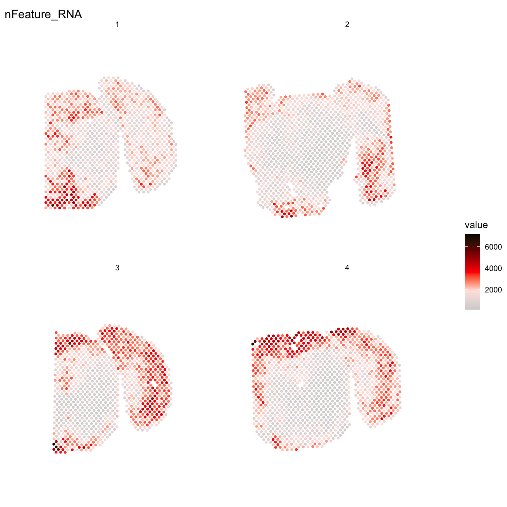

Getting started
Last updated: 2020-01-12
Checks: 6 1
Knit directory: STUtility_web_site/
This reproducible R Markdown analysis was created with workflowr (version 1.5.0). The Checks tab describes the reproducibility checks that were applied when the results were created. The Past versions tab lists the development history.
Great! Since the R Markdown file has been committed to the Git repository, you know the exact version of the code that produced these results.
Great job! The global environment was empty. Objects defined in the global environment can affect the analysis in your R Markdown file in unknown ways. For reproduciblity it’s best to always run the code in an empty environment.
The command set.seed(20191031) was run prior to running the code in the R Markdown file. Setting a seed ensures that any results that rely on randomness, e.g. subsampling or permutations, are reproducible.
Great job! Recording the operating system, R version, and package versions is critical for reproducibility.
- annotation
To ensure reproducibility of the results, delete the cache directory getting_started_cache and re-run the analysis. To have workflowr automatically delete the cache directory prior to building the file, set delete_cache = TRUE when running wflow_build() or wflow_publish().
Great job! Using relative paths to the files within your workflowr project makes it easier to run your code on other machines.
Great! You are using Git for version control. Tracking code development and connecting the code version to the results is critical for reproducibility. The version displayed above was the version of the Git repository at the time these results were generated.
Note that you need to be careful to ensure that all relevant files for the analysis have been committed to Git prior to generating the results (you can use wflow_publish or wflow_git_commit). workflowr only checks the R Markdown file, but you know if there are other scripts or data files that it depends on. Below is the status of the Git repository when the results were generated:
Ignored files:
Ignored: .Rhistory
Ignored: .Rproj.user/
Ignored: analysis/getting_started_cache/
Note that any generated files, e.g. HTML, png, CSS, etc., are not included in this status report because it is ok for generated content to have uncommitted changes.
There are no past versions. Publish this analysis with wflow_publish() to start tracking its development.
First you need to load the library into your R session.
library(STutility)10X Visium platform
Input files
10X Visium data output is produced with the SpaceRanger. The output includes a number of files, but the ones that needs to be imported into R for STUtility is the following:
- Count file (Count file with raw counts (UMI filtered) for each gene and capture spot. SpaceRanger outputs this in .h5 format, and the file is typically called “xxxxx_filtered_feature_bc_matrix.h5”)
- Position list (tissue_positions_list.txt for each sample, contains capture-spot barcode spatial information and pixel coordinates)
- H&E image (tissue_hires_image.png or tissue_lowres_image.png for each sample)
Also, there is a forth file which holds information about the image scale:
- scalefactors_json.json
This file contains scaling factors subject to the H&E images of different resolutions. E.g. “tissue_hires_scalef”: 0.063, implies that the pixel coordinates in the position list should be scaled with 0.063 to match the size of the hires_image.png file.
In the current version of STUtility, this scaling factors needs to be noted manually and stated during the input when using the InputFromTable() function We have chosen this to minimize the number of dependencies.
To use the full range of functions within STUtility, all three files are needed for each sample along with the information in the forth file. However, all data analysis steps that do not involve the H&E image can be performed with only the count file as input. To read in the 10x Visium .h5 files, the package hdf5r needs to be installed (BiocManager::install("hdf5r")).
To follow along this tutorial with a test data set, go to the 10x Dataset repo and download the following two files:
- Feature / cell matrix HDF5 (filtered)
- Spatial imaging data (.zip)
- tissue_hires_image
- tissue_positions_list
- scalefactors_json
The .zip file contains the H&E image (in two resolution formats; “tissue_lowres_image” and “tissue_hires_image”), the “tissue_positions_list” with pixel coordinates for the orginial .tif image and the scalefactors_json.json that contains the scalefactors used to dervive the pixel cooridinates for the lowres and hires images. There are some alternatives to handle the scalefactors. Either, you manualy open the .json file and note the scalefactor used for the images you want to use (lowres or hires), and state these numbers in a column in the infoTable named “scaleVisium” (see below). Or, you add a column named “json” with paths to the “scalefactors_json.json” files. A third option is to manually input the values to the function InputFromTable (see ?InputFromTable).
In this vignette we show e.g. the data sets from Mouse Brain Serial Section 1 and 2 (Sagittal-Posterior)
Prepare data
The recommended method to read the files into R is via the creation of a “infoTable”, there are three columns that the package will note whether they are included or not: “samples”, “spotfiles” and “imgs”.
samples spotfiles imgs
1 Path to count file 1 Path to position list 1 Path to H&E image 1
2 Path to count file 2 Path to position list 2 Path to H&E image 2
scaleVisium
1 scale to image 1
2 scale to image 2These contains the paths to the files. Any number of extra columns can be added with metadata. This information can then be used to e.g. coloring of plots and subsetting. These columns can be named as you like, but not “sample”, “spotfiles” or “imgs”. Analysis of the data can be performed without the images, and then those columns are simply left out.
Lets load the provided infoTable
infoTable <- read.table("infoTable.csv", sep=",", header=T, stringsAsFactors = F)We are now ready to load our samples and create a “seurat” object.
Here, we demonstrate the creation of the seurat object, while also including some filtering:
- Keeping the genes that are found in at least 5 capture spots and has a total count value >= 100.
- Keeping the capture-spots that contains >= 500 total transcripts.
Note that you have to specify which platform the data comes from. The default platform is 10X Visium but if you wish to run data from the older ST platforms, there is support for “1k” and “2k” arrays. You can also mix datasets from different platforms by specifying one of; “Visium”, “1k” or “2k” in a separate column of the infoTable named “platform”. You just have to make sure that the datasets have gene symbols which follows the same nomenclature.
se <- InputFromTable(infotable = infoTable,
min.gene.count = 100,
min.gene.spots = 5,
min.spot.count = 500,
platform="Visium")
Once you have created a Seurat object you can process and visualize your data just like in a scRNA-seq experiment and make use of the plethora of functions provided in the Seurat package. There are many vignettes to get started available at the Seurat web site.
For example, if you wish to explore the spatial distribution of various features on the array coordinates you can do this using the ST.FeaturePlot() function.
ST.FeaturePlot(se, features = c("nFeature_RNA"), dark.theme = T, cols = c("black", "dark blue", "cyan", "yellow", "red", "dark red"))
Original ST platform
In general, using STUtility for the old ST platform data follows the same workflow as for the 10X Visium arrays. The only difference is when loading the data into R.
Input files
The original ST workflow produces the following three output files:
- Count file (Count file with raw counts (UMI filtered) for each gene and capture spot)
- Spot detector output (File with spatial pixel coordinate information produces via the Spot Detector webtool)
- H&E image
Prepare data
The recommended method to read the files into R is via the creation of a “infoTable”, which is a table with at least three columns “samples”, “spotfiles” and “imgs”.
Test data is provided:
infoTable <- read.table("metaData_mmBrain.csv", sep=";", header=T, stringsAsFactors = F)[c(1, 5, 6, 7), ]Load data and convert from EnsambleIDs to gene symbols
The provided count matrices uses EnsambleIDs (with version id) for the gene names. Gene symbols are often a preference for easier reading, and we provide a transformation table accordingly.
#Transformation table for geneIDs
ensids <- read.table(file = list.files(system.file("extdata", package = "STutility"), full.names = T, pattern = "mouse_genes"), header = T, sep = "\t", stringsAsFactors = F)We are now ready to load our samples and create a “seurat” object.
Here, we demonstrate the creation of the seurat object, while also including some filtering:
- Keeping the genes that are found in at least 5 capture spots and has a total count value >= 100.
- Keeping the capture-spots that contains >= 500 total transcripts.
Note that we specify that we’re using the “2k” array platform and also, since we in this case have genes in the columns, we set transpose=TRUE.
#TODO: add warnings if ids missmatch. Check that ids are in the data.frame ...
se <- InputFromTable(infotable = infoTable,
min.gene.count = 100,
min.gene.spots = 5,
min.spot.count = 500,
annotation = ensids,
platform = "2k",
transpose = T,
pattern.remove = "^mt-")
Once you have created a Seurat object you can process and visualize your data just like in a scRNA-seq experiment and make use of the plethora of functions provided in the Seurat package. There are many vignettes to get started available at the Seurat web site.
Some of the functionalities provided in the Seurat package are not yet supported by STUtility, such as dataset integration and multimodal analysis. These methods should in principle work if you treat the data like a scRNA-seq experiment, but you will not be able to make use of the image related data or the spatial visualization functions.
For example, if you wish to explore the spatial distribution of various features on the array coordinates you can do this using the ST.FeaturePlot() function.
ST.FeaturePlot(se, features = c("nFeature_RNA"), dark.theme = T, cols = c("black", "dark blue", "cyan", "yellow", "red", "dark red"))